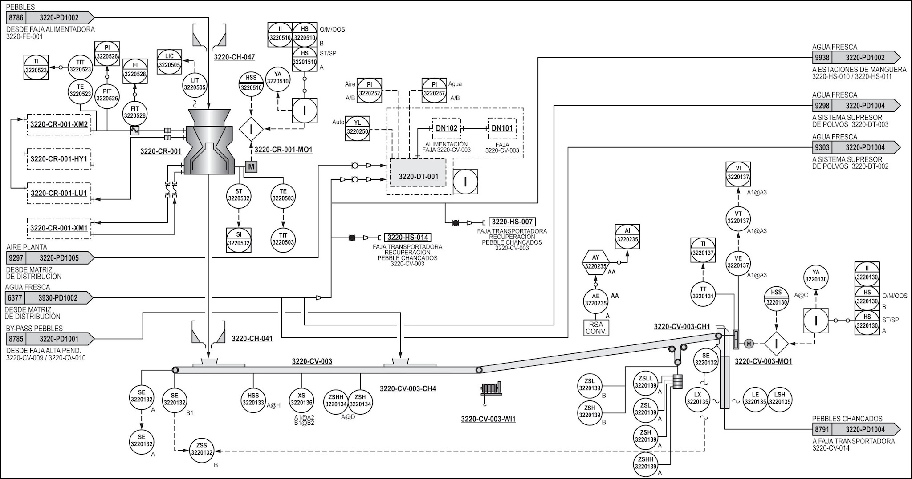

❮
Progreso del Curso
0%
Circuito de Clasificación - Molienda
Chancadora de pebble 1 (3220-CR-001), faja transportadora recuperación pebble chancados (3220-CV-003) y sistema supresor de polvos (3220-DT-001)

Continuar
❯